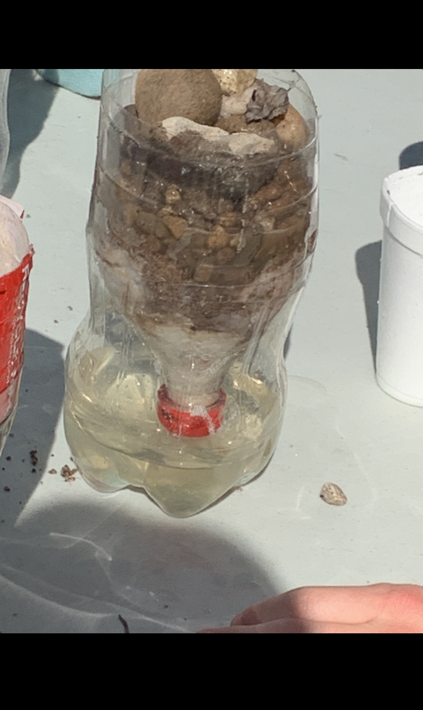

This is my first blog.
This is my second blog. Today, for the challenge, we as class had to choose an object to draw. To draw the object, we used TinkerCad. For me, I chose to do a mini Bible as my object. I think I did pretty well but I sadly didn't win a kitkat :/ But it's okay because I think I made it as detailed as possible :)
This is my third blog. Today we made an E with super exact dimensions with it. I made my E with 36 inches as the height and about 8 inches for the side parts. We had so switch with someone else to make our E for us and I had to make Ryan's. His was about 11 cm in height and about 6 cm for the sides. When I was done with Ryan's, I looked over to see mine and it was super huge. I was shocked by how big it was but it was a beautiful E :)
This is my fourth blog. Today is 9/16/22 and we tried to make a boat float on top of the water. I was in group two and we made a failry acceptable boat but we soon found out unfortunately that it was way too small. We used four marbles to balance the boat out. When we got over there, our sank in about a minute but it group number four took it all home :(
This is my fifth blog. This week we made a Rube Gold Berg
machine and me and my team made a very cool design. Our
project was made with a car that Ryan brought in a string
to hold the baseball. When we started to test out project,
it fortuately worked on the first try. This made us very happy
and me and my team were very excited because it worked.
This is my sixth blog. Yesterdsay and Today, we were dissecting
a laptop. It wasn't a chromebook however, but a big normal laptop
As we were dissecting it, my team and I, Ryan and Linnea, had to
drop our screws into a small container so that we wouldn't lose them.
We also had to color code what we saw on the two sheet layouts of
the design that was given to each and everyone of us. After we took
it apart with the help of the slides that was posted, we had to know
go into reverse and put it all back together the same way we had
opened it.

This is my seventh blog. This week, I had to create a
prosthetic for an animal of my choice. I obviously chose
a crow because they are just simply better but I needed to create
a wing to help it fly incase of an emergency. I chose to create
two small solar-powered batteries to help the wing flap. I chose
this because I thought it would be most efficient for the animal and
the wing. And then, I needed to make a way for the wing to actually
attach to the crow so I thought about a small wing that would be plastic
and be attached by surgery to the crow so that it would not rust after years and cause infections to the crow.

This is my eight blog. Today, our challenge statement was to build a flying object out of paper. I chose an airplane because I think it would have been the easiest and most efficient way to do it. Our goal was to go outside on to the second floor of the balcony and try to hit the trash can outside on the ground with out flying objects. I tried to make mine as aerodynamic as much as I could by adding little flaps that would later on try to help to uplift my airplane as it lifts off into the air. Unfortunately however, I barely made it out of the balcony and it barely flew and then sank fastly to the ground in around two seconds :(.
This is my eight blog. Today we tried to make a water filter to try to clean the water as our challenge today. I was on group 6 and we made a pretty good one that was kind of yellow-ish but pretty clean to be honest. I had a lot of fun when I did it with my group together as a team. We also made it by using cotton first,m then sand then small rocks, and then finally big rocks, going from bottomn to the top.
This is my ninth blog. Today we learned about electrical engineering, which honestly was really cool and I cannot wait until we can get to the hands-on portion of the course. We also had to do a worksheet which was pretty easy which had to tie in a little with physics and it was really fun and I am very excited to start this course and I have good feelings about it. :)
This is my tenth blog. Today we lesrned how to make a bottle rocket and we went outside to the field right next to the 5000 building and set them off with pressure. With the help of the other engineering class we were able to make our rockets fly together. I had a lot of fun with this and hope we can do this again.
this is my eleventh blog. Today we learned about circuts inside of TinkerCad and it was really cool to see how circuits are formed and how they use electricity to make light appear in a bulb. We tried this out with different types of batteries and each one had a differnt type of voltage. I had a lot of fun with this and it was a really cool experience for me.
This is my twelvth blog. Today we had a very hard but interesting challenge. This challenge was to choose between sitting in a math class for a whole year for 50 min a day for 180 days or count from 1 to 1,000,000 without any breaks. This was very hard for me and everytime I thought that I had the answer, I was overthinking that I was missing something, and the truth was that I was. Even though the question and answer was hard for my brain to wrap itself around, I still had lots of fun and I really liked this challenge a lot.
This is my thirteenth blog. Today, was a very fun Lab because we were able to get a laptop and circuits and LED bulbs and use Arduino Programming to code on the laptop and make the LED bulbs flicker in all different patterns and shapes. Honestly, this was a very life changing and fun experience for me and I had so much fun doing this with my teammate Linnea, and I can hope that we do something like this in the future again :).
This is the beginning of semester dos. This is my first blog. This week, we were told to come up with a shark tank pitch that we can use to present. My group of 4 (including me) chose to make a mathinator which is a advanced version of a calculator that lets you do complex math on it. Honestly, this project was very fun and I want to see more things like this soon. :))
This is my second blog. This week we were told to make obleck, and it was actually very very fun. And I also got to work with Xavier because he was sitting right next to me. The whole point was to make something very cool which it was but it was also very messy too. But either way I really loved this project so much and would like to see it again in my future. :)
Week 6 : Arduino Project Evaluation For this weeks project, me and my partner Xavier decided to push our selves and work on the Arduino car project. We ddecided to do this because I felt like we are able and that we have potential to atleast try and accomplish this project. To be honest, the project was really hard at first because we both knew nothing about how to code Arduino and we were scared that we would not be able to do this assignment. But eventually we started to ask other groups who were doing the same project as us and we got the hang of what had to be done in order to start and complete this project. We did definitely have many obstacles to get over including us actually learning how to use the code correctly and put it into use. but overall, I think that this project was very good because it helped me and Xavier to learn new things about Arduino and a lot of life skills including teamwork and friendship. I liked doing this project a lot with my partner Xavier Ponce and it was really fun to do this project with him.
This is my Ninth blog ( Week Nine) This week we were able to do a challege involving a boat to be made with chopsticks and other material like pipe cleaners, baloons, and rubber bands to be helped to make the boat. In out project, we made our boat have a more aerodynamic shape to it by adding a cone shape at the front of the boat itself. The competition was to make the boat float for the longest in a gutter with water filled up inside of it. Our went for about four feet and four inches. This for me, was actually a lot more than I expected because I thought it would only go for about one foot and a few inches inside of the gutter. And honestly, I think that this was a very fun project and if I were able to do this again, I would probably make the boat more stable by adding more foundation on the bottom of the boat and maybe A little more air on the baloon so that it goes for a longer distance.
This is my tenth blog. (Week 10) This week we were told to make or atleast try to start a project which would be an egg toss. We were told first to sketch out a good drawing of our egg box using the materials such as straws, popsicle sticks, carboard boxes, and carboard and also baloons and bags such as normal ones or just trash bags too. I think that my sketch was pretty good but I failed to think about the actual inside of the carboard box and not just the outside because I did most of the protection on the outside. Overall, I am very excited to see what this project brings me and my team and I am looking forward to it definiely. I can't wait for it.
This is my eleventh blog. This week we were told to make and test out our egg drop projects. I think that our project went really well because the egg did not crack at all in the layers that we put it in. We wrapped our egg in newspaper and just regular paper in general. I think we did about the same good job as other groups did because most of the groups’ eggs didn’t break at all either. Either way, I think that our group had a very good play at this project and I really enjoyed doing this project.
COOkie recipe